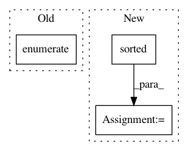

fdb21ea28fc513f118e1a8b06069f84c3f4c23bc,tensorflow_transform/beam/analyzer_cache.py,WriteAnalysisCacheToFS,expand,#WriteAnalysisCacheToFS#Any#,143
Before Change
sorted_dataset_cache_list = sorted(
dataset_cache_dict.items(), key=lambda kv: kv[0])
for dataset_key_idx, (dataset_key,
cache_dict) in enumerate(sorted_dataset_cache_list):
dataset_key_dir = _get_dataset_cache_path(self._cache_base_dir,
dataset_key)
After Change
def expand(self, dataset_cache_dict):
if self._sorted_dataset_keys is None:
sorted_dataset_keys_list = sorted(dataset_cache_dict.keys())
else:
sorted_dataset_keys_list = self._sorted_dataset_keys
missing_keys = set(dataset_cache_dict.keys()).difference(
set(sorted_dataset_keys_list))
In pattern: SUPERPATTERN
Frequency: 3
Non-data size: 3
Instances
Project Name: tensorflow/transform
Commit Name: fdb21ea28fc513f118e1a8b06069f84c3f4c23bc
Time: 2019-09-19
Author: zoy@google.com
File Name: tensorflow_transform/beam/analyzer_cache.py
Class Name: WriteAnalysisCacheToFS
Method Name: expand
Project Name: home-assistant/home-assistant
Commit Name: b09fe4a3a75e58187147f4dc10f86adb272be12c
Time: 2014-06-05
Author: Paulus@PaulusSchoutsen.nl
File Name: homeassistant/components/http/__init__.py
Class Name: RequestHandler
Method Name: _handle_get_root
Project Name: caserec/CaseRecommender
Commit Name: 668f2e3a8a497396b620f22aa8fc6a798a58de16
Time: 2016-08-03
Author: fortes.arthur@gmail.com
File Name: CaseRecommender/recommenders/rating_prediction/base_knn.py
Class Name: BaseKNNRecommenders
Method Name: __init__